Player Colors in Goldsrc Multiplayer
If you’ve played any of the multiplayer games that use Valve Software’s Goldsrc engine, you may be familiar with the customization options available. These can allow you to personalize your character's appearance, changing the model and color of your character. One day, as I tend to do, I wondered if I could recreate the colors of the character I had personalized in other 3D software, such as Blender. This led me to the question: How the heck does the game actually change the colors of a character? And so the effort of my understanding has been put here, so the next hopeless chap may escape the same fate I did. Or just to be interesting.
First, let’s start off with how the color change looks in these games. I will be using Half Life for demonstration purposes, but most of Valve’s games in the Goldsrc engine use the same system, including Team Fortress Classic and Deathmatch Classic. But basically, a user is given 2 sliders that will change the color of your character, Primary and Secondary
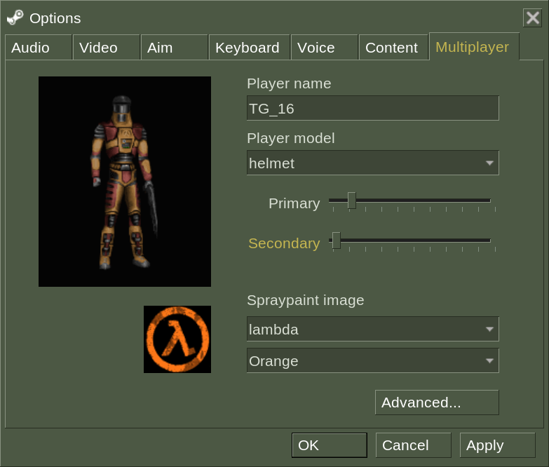
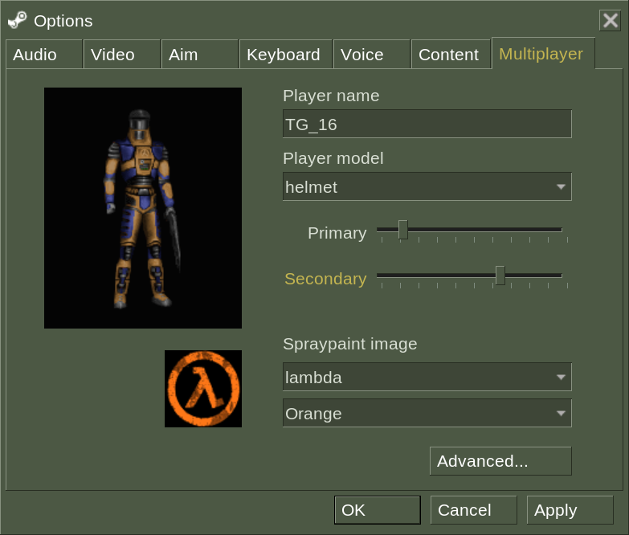
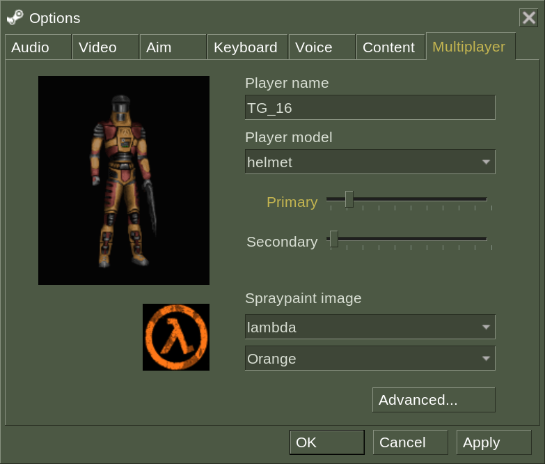
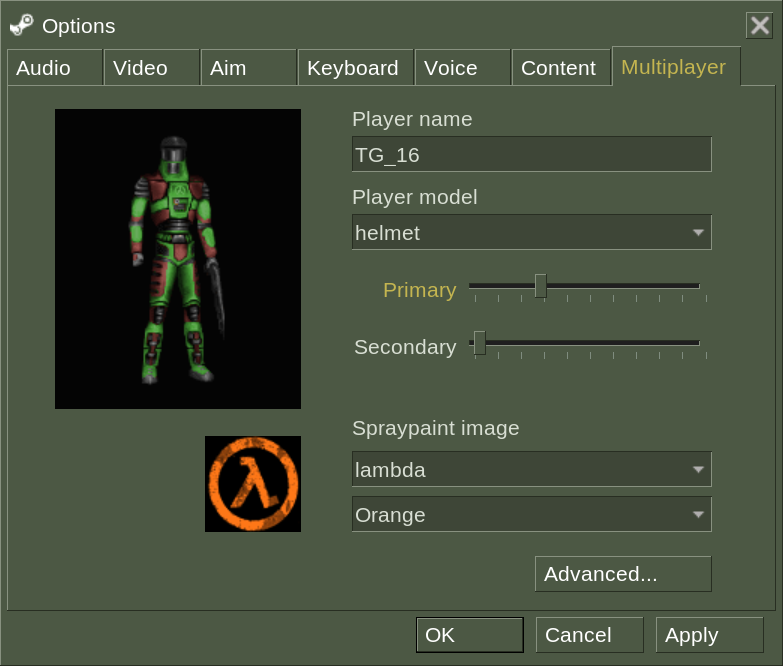
These sliders change the internal variables “topcolor” and “bottomcolor” respectively. These values can range from 0 to 255 (this will be a problem later). What these variables actually do is change the hue, and only the hue, of certain colors on the texture of the model. You see, the texture file is a .bmp file, an image file that uses a pallet to set the colors of the image. Each pixel is assigned a position on this pallet, and so changing the pallet will change the colors of the image. This is usually done to reduce the size of an image file, but Goldsrc uses this to easily change to colors of textures. This is what the pallet of the default character in Half Life multiplayer, helmet, looks like:
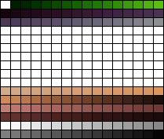
topcolor edits the hue of these colors:
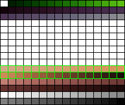
…and bottomcolor edits the hue of these colors:
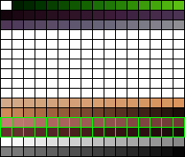
As you might be able to tell, these only cover a small portion of the full colors of the textures, this is how Goldsrc only edits one part of an image!
Now, this is all well and good, but there are a few complications if we want our textures to look correct in another program. We could go in and edit the hue of all of the pallet slots attached to the color we want to change, but most image editing software store hues up to 360, not 255. This makes it really hard to get the exact right copy of the color we want. Thankfully, someone has already done the work for us. I believe there are a few programs that can do this, but I happen to be familiar with Half Life Asset Manager. HLAM mainly allows you to look at Goldsrc models, but it also has a full recreation of the multiplayer coloring system. After installing HLAM, open the model of your choice with it. I will be using the default helmet model again, located in your Half Life install (Half-Life/valve/models/player/helmet/helmet.mdl). After you open your file, navigate to the “Textures” tab at the bottom.
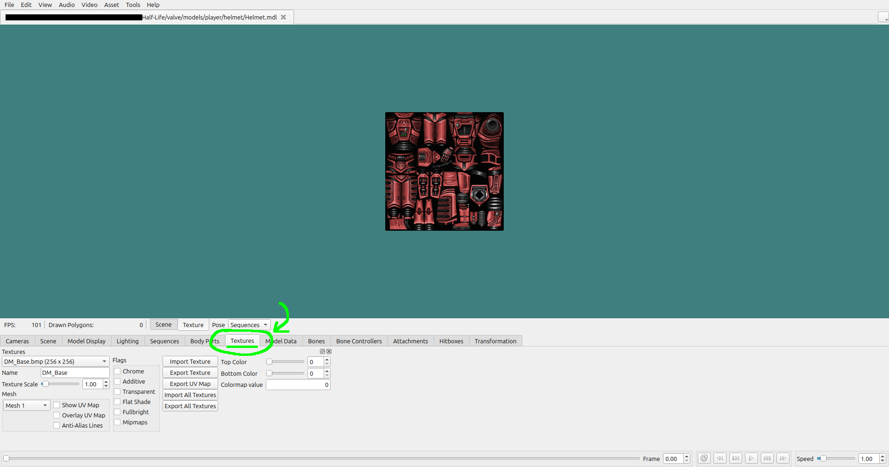
If the model you chose supports recoloring, the texture should look red. If it doesn't, check the drop-down menu on the bottom left labeled “Textures”, and see if other texture files work, as some of them may not change colors. Now, you can mess around with the “Top Color” and “Bottom Color” sliders to set them to the colors you want. I will set them to the default colors, topcolor of 30, and bottomcolor of 6.
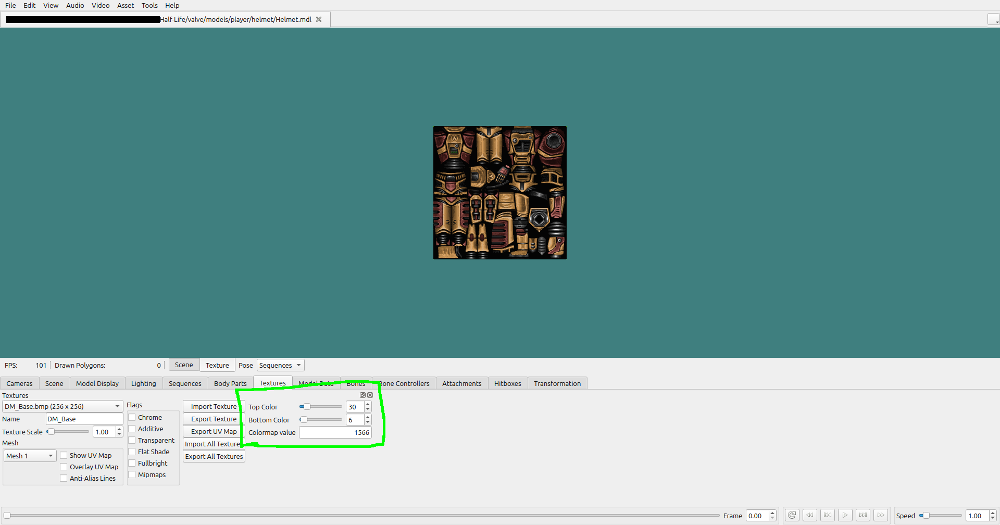
Now you have your properly colored image! All you need to do now is take a screenshot of the texture, either using your operating system’s built-in screenshot tools, or you can click on “Video” -> “Take Screenshot…” in the top right of HLAM. Make sure the “Texture Scale” on the bottom left is set to 1, otherwise your image will be too big. After you’ve taken your screenshot, crop the image to only contain the texture. You should end up with something like this:
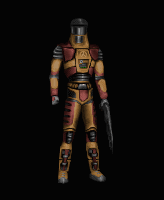
This is really the end of most of our work. If you want to use these colors in a different program, simply swap out the original texture with your colored one. The exact process for this is different for every program, but I will quickly show you how to do it in Blender. I should note that I am in no way a Blender expert, nor am I even a competent Blender user, but I know how to do this specific thing. First, import helmet.mdl (or the model of your choice) to Blender using SourceIO. Then navigate to the “Texture Paint” tab. Click on “Image” -> “Open…” like so:
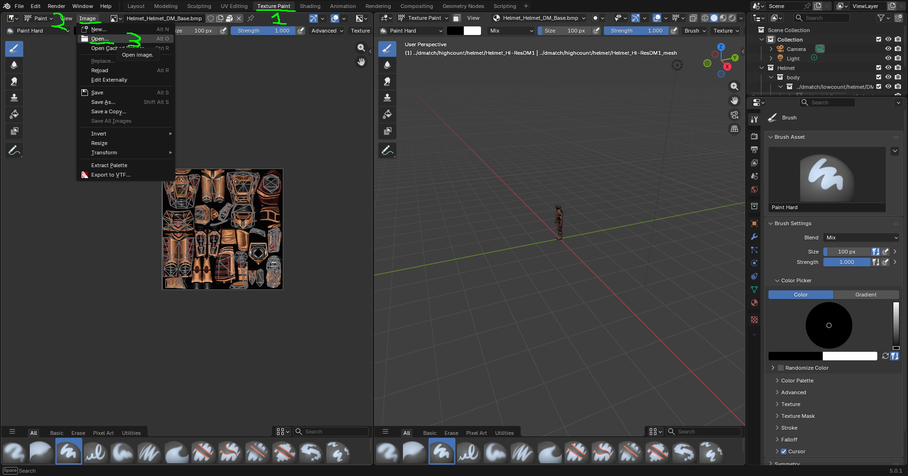
Open your colored image. This will import the image into Blender. Next, navigate to the “Shading” tab. At the bottom, there should be a node labeled “$basetexture”. Click on the image dropdown and select your imported image.
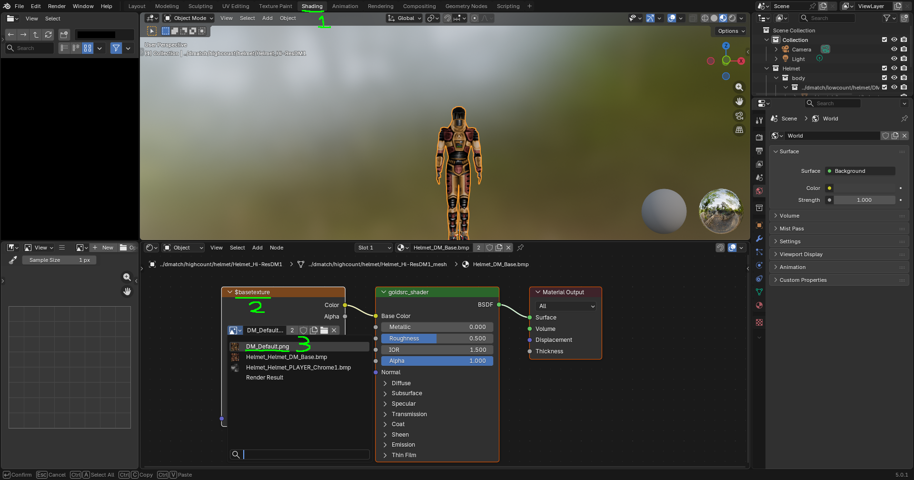
And there you go! Your model is properly recolored. Now go make something cool!
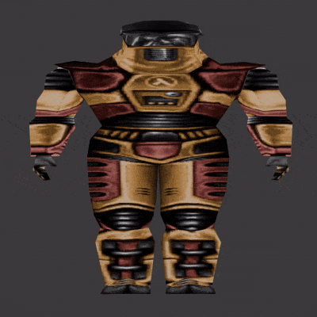